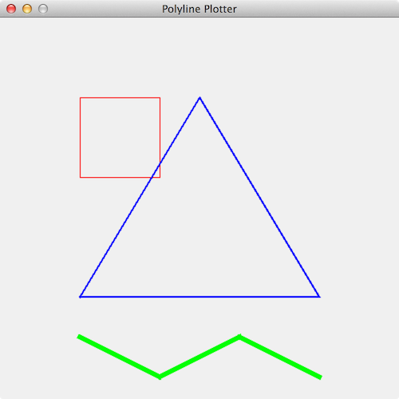

Polylines
For the next checkpoint, you will write an application that will parse data from a text file that contains instructions for drawing some simple graphics. Each line of the file describes a polyline, that is, a sequence of points with line segments drawn between them.
We'll encapsulate the data for one polyline in an object of type Polyline,
and we'll draw everything using an application called Plotter.
The code for these is provided for you in a jar file.
To start out, let's try an example to see how it works. First import the jar file polyline_plotter.jar into your project and add it to the build path (just as you would a specchecker). Then, try running the code TestPlotter.java The main method looks like this:
public static void main(String[] args)
{
// make a red square using default line width of one pixel
Polyline pl = new Polyline("red");
pl.addPoint(new Point(100, 100));
pl.addPoint(new Point(200, 100));
pl.addPoint(new Point(200, 200));
pl.addPoint(new Point(100, 200));
pl.addPoint(new Point(100, 100));
// make a blue triangle with a line width of 2 pixels
Polyline pl2 = new Polyline("blue", 2);
pl2.addPoint(new Point(250, 100));
pl2.addPoint(new Point(400, 350));
pl2.addPoint(new Point(100, 350));
pl2.addPoint(new Point(250, 100));
// make some green zig-zags with a thick line
Polyline pl3 = new Polyline("green", 6);
pl3.addPoint(new Point(100, 400));
pl3.addPoint(new Point(200, 450));
pl3.addPoint(new Point(300, 400));
pl3.addPoint(new Point(400, 450));
// plot the three polylines using the plotter
Plotter plotter = new Plotter();
plotter.plot(pl);
plotter.plot(pl2);
plotter.plot(pl3);
}
Drawing takes place on a window that is roughly 500 by 500 pixels. Points are specified using integer coordinates. The upper-left corner is (0, 0), where x-coordinates increase from left to right and y-coordinates increase from top to bottom.
To construct a Polyline object, we specify one of several possible colors, and optionally a line width in pixels. Then we use the addPoint method
to add points to the polyline. The plotter will start at the first point given and
draw a line segment between each successive pair of points. (The Point class comes from the package java.awt, see the import statements at the top of the
TestPlotter.java file.)
When we have one or more polylines to plot, we can create a Plotter
and call the plot method for each polyline.
For more details you can consult the javadoc for Plotter and the javadoc for Polyline.
The code above produces the following:
